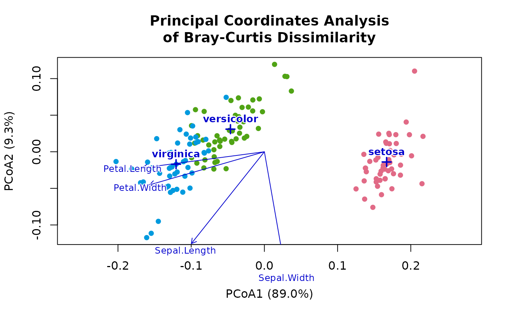

Finds the direction in an ordination along which each numeric variable
(or taxon) increases fastest, and how strongly it correlates with the
ordination (\(r^2\)); and, for each factor, the centroid of each of its
levels and how well the factor separates the samples. Permutation tests
give p-values. Gives the same arrows, centroids, and \(r^2\) as
vegan::envfit(), and the same p-values for the same permutations, but
runs in parallel C, so that fitting thousands of taxa with 999
permutations each takes seconds. Use it for the arrows and labels of a
biplot.
Usage
envfit(
ord,
data = NULL,
counts = NULL,
margin = 1L,
norm = "none",
pseudocount = NULL,
axes = NULL,
na.rm = FALSE,
permutations = 999L,
strata = NULL,
seed = 0L,
cpus = n_cpus()
)Arguments
- ord
An ordination: a numeric matrix with one row per sample and one column per axis, such as from
pcoa(),pca(),nmds(),dbrda(),tsne(), orumap(). A data frame of numeric columns also works.- data
Sample metadata to fit: a data frame with one row per sample. Numeric columns are fitted as vectors (arrows), and factor, character, and logical columns as factors (centroids). Rows are matched to the samples in
ordby row name, and rows for other samples are ignored; without row names, they must be in the same order asord. A matrix, or a single vector or factor (namedgroup), is also accepted.- counts
A feature table to fit, such as taxa abundances: each feature is fitted as a vector. Accepts the same objects as
beta_div(): a numeric matrix (samples in rows, or in columns withmargin = 2), a sparse matrix from Matrix or slam, or aphyloseq,rbiom, orSummarizedExperimentobject. Sparse tables are never made dense. Samples are matched by name toord's row names, and samples not inordare ignored; without names, they must be in the same order asord. Givedata,counts, or both.- margin
The margin containing samples.
1if samples are rows,2if samples are columns. Ignored whencountsis a special object class (e.g.phyloseq). Default:1- norm
Normalize
countsbefore fitting them, as inbeta_div():'none','percent','chord','hellinger','binary','clr', or'rclr'. Default:'none'.margin,norm, andpseudocountapply only tocounts.- pseudocount
Value added to counts to handle zeros when
norm = 'clr'. Ignored for other normalization methods. See Pseudocount section.- axes
Which columns of
ordto fit onto: indices or column names. The default,NULL, uses every column.vegan::envfit()uses the first two by default (itschoices = c(1, 2)), so giveaxes = 1:2to compare with it.- na.rm
Leave out samples with missing values (
NA) inordor in any column ofdata, asvegan::envfit()does.countsmust not have any. Default:FALSE, which stops with an error if there are any.- permutations
The number of permutations. Default:
999. Alternatively, a matrix with one permutation of1:nper row, as frompermute::shuffleSet(), to use instead of random ones.- strata
Permute samples only within these groups (blocks). With
data, the name of one of its columns (which is then not fitted), or a vector with one value per row ofdata. Withoutdata, a vector with one value per row oford, matched to them by name when it has names, otherwise in the same order. Default:NULL(free permutation).- seed
An integer seed for the random permutations. The same seed gives the same p-values. Default:
0- cpus
How many parallel processing threads should be used. The default,
n_cpus(), will use all logical CPU cores.
Value
A data frame with one row per numeric variable and per level of
each factor of data, in the order of its columns, followed by one row
per feature of counts. Its columns are:
variable: The variable's name.level: The factor level, orNAfor numeric variables.One column per axis of
ordfitted, named as inord(such asPCoA1,PCoA2). For a numeric variable, the direction of its arrow, as unit-length coordinates (multiply bysqrt(r2)forvegan::scores(fit, "vectors")'s arrows). For a factor level, the mean coordinates of its samples (the centroid).r2: The squared correlation of a numeric variable with its fitted values, or for a factor, the proportion of the ordination's variance that is between its levels (repeated on each level's row).p_value: The permutation p-value ofr2(also repeated for factors).z: The standardized effect size,(r2 - mean(r2_perm)) / sd(r2_perm), for that variable's column ofr2_perm.
Row names are the variables' names, and for factor levels, the
variable's name pasted to the level's, as in vegan::envfit(). The
data frame has class "ecodive_envfit", only to mark what made it.
Attributes: r2_perm, a matrix of the \(r^2\) of each permutation
(rows) for each variable (columns); and n_perm, the number of
permutations.
Details
Method
With \(X\) the \(n \times k\) centered coordinates of the axes and \(v\) a variable, centered, the multiple regression \(v \approx X \beta\) (Dargie 1984; Oksanen et al.) gives the variable's direction: \(\beta\), scaled to unit length. Its strength is \(r^2 = \|\hat{v}\|^2 / \|v\|^2\), the squared correlation between the variable and its fitted values. For a factor, \(r^2\) is the sum of squares between its levels' centroids divided by the total sum of squares of \(X\), as in a one-way MANOVA.
The p-value is the proportion of permutations of the samples, counting
the observed data, with an \(r^2\) at least as large: \((1 +
\#\{r^2_{perm} \ge r^2\}) / (1 + permutations)\). As in vegan::envfit(),
permuted values within sqrt(.Machine$double.eps) of the observed one
count as ties.
Speed and memory
With \(Q\) an orthonormal basis of \(X\)'s columns, \(\|\hat{v}\|^2 = \|Q^T v\|^2\). A permutation of the samples permutes the rows of \(Q\) instead of every variable, so each permutation costs \(k\) multiply-adds per non-zero value of the table, with no refitting, and zeros of a sparse table cost nothing. A factor's level sums cost \(k\) additions per sample. Permutations run in parallel.
Reproducibility
The permutations come from seed, not from R's random number generator,
so set.seed() has no effect, and each permutation has a random number
stream of its own: the same as permanova()'s for the same seed and
number of samples. P-values are identical from run to run and for any
number of cpus. The random permutations differ from vegan's, so
p-values agree with it only up to sampling error, unless the same
permutations matrix is given to both.
Differences from vegan::envfit()
All of
ord's columns are fitted by default, not the first two.The result is one data frame, not a list of vectors and factors.
A variable that has the same value in every sample (such as a taxon found in none of them) has \(r^2 = 0\), an arrow of zeros, and a p-value and
zofNA, wherevegangives a p-value of 1. So does a factor with one level.When the axes of
ordare linearly dependent, the aliased axes get 0 in the arrows, wherevegangivesNAfor every arrow.There are no weights (
w): no ecodive ordination has them.veganuses them only for its CA and CCA results.stratapermutes freely within strata. For other restricted designs, pass apermutationsmatrix frompermute::shuffleSet().When there are fewer possible permutations than requested,
vegan(viapermute) runs each of them once instead.envfit()always draws random permutations.
References
Dargie, T. C. D. (1984). On the integrated interpretation of indirect site ordinations: a case study using semi-arid vegetation in southeastern Spain. Vegetatio, 55, 37-55. doi:10.1007/BF00039980
Oksanen, J., et al. vegan: Community Ecology Package. envfit().
https://CRAN.R-project.org/package=vegan
Examples
dm <- bray(iris[, 1:4])
ord <- pcoa(dm, n_axes = 2)
# An arrow for each measurement, a centroid for each species.
fit <- envfit(ord, iris)
fit
#> variable level PCoA1 PCoA2 r2
#> Sepal.Length Sepal.Length <NA> -0.62240779 -0.78269313 0.8942973
#> Sepal.Width Sepal.Width <NA> 0.17280029 -0.98495688 0.9213948
#> Petal.Length Petal.Length <NA> -0.99139935 -0.13087144 0.9849779
#> Petal.Width Petal.Width <NA> -0.96090689 -0.27687170 0.9289167
#> Speciessetosa Species setosa 0.16700378 -0.01395054 0.8875721
#> Speciesversicolor Species versicolor -0.04635194 0.03090254 0.8875721
#> Speciesvirginica Species virginica -0.12065184 -0.01695200 0.8875721
#> p_value z
#> Sepal.Length 0.001 71.49808
#> Sepal.Width 0.001 67.92426
#> Petal.Length 0.001 74.01866
#> Petal.Width 0.001 70.39502
#> Speciessetosa 0.001 70.18593
#> Speciesversicolor 0.001 70.18593
#> Speciesvirginica 0.001 70.18593
# A biplot of the measurements.
vec <- fit[is.na(fit$level), ]
plot(ord, col = iris$Species)
arrows(0, 0, vec$PCoA1 * sqrt(vec$r2) * 0.1, vec$PCoA2 * sqrt(vec$r2) * 0.1)
